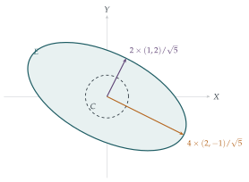

STEP III 1990, 문제 6
계속 읽기 전에 문제를 먼저 읽어 보자. 문제는 STEP Support Programme의 문제 데이터베이스에 있다: step.maths.org/questions/90-s3-q6
도입
행렬 변환은 보통 모든 벡터를 새로운 방향으로 옮긴다. 그러나 많은 행렬에는 전혀 돌리지 않고 그 방향으로 늘이거나 줄이기만 하는 특별한 방향이 몇 개 있다. 이것을 그 행렬의 고유벡터(eigenvector)라 하고(독일어 eigen은 “자신의” 또는 “고유한”이라는 뜻이다), 늘어나는 비율을 고윳값(eigenvalue)이라 한다. 이 문제의 행렬처럼 대칭행렬에서는 언제나 그렇듯이 고유벡터가 충분히 많으면, 변환이 투명하게 드러난다. 알맞은 좌표에서 보면 그것은 단지 두 축 방향으로 늘이는 것일 뿐이다.
이 문제는 특정한 행렬의 고유벡터를 구하고, 이를 이용해 그 행렬이 원을 어떻게 바꾸는지 이해한다. 고유벡터는 응용수학 전체에서 가장 유용한 개념 가운데 하나이다. 고유벡터는 다리의 고유 진동, 회전하는 물체의 주축, 원자의 에너지 준위, 데이터 구름에서 가장 중요한 방향, 그리고 구글(Google)의 초기 PageRank 알고리즘에 의한 웹 페이지 순위를 설명한다.
시작하기 전에
\(T\)가 벡터를 “방향은 그대로 두고 스칼라배만 한다”는 것은 무슨 뜻인가? 이를 식으로 써 보아라.
이는 어떤 수 \(\lambda\)에 대하여 \(T\mathbf{v} = \lambda\mathbf{v}\)라는 뜻이다. 즉 \(\mathbf{v}\)는 고윳값이 \(\lambda\)인 고유벡터이다. 문제에 나오는 두 벡터 \((1, 2)\)와 \((2, -1)\)이 서로 수직이라는 점에 주목하자. 이는 우연이 아니다. 이 행렬은 대칭(symmetric)행렬이고, 대칭행렬의 고유벡터는 언제나 서로 수직이다.
차근차근 풀기
단계 1 고유벡터
\[T\begin{pmatrix} 1 \\ 2 \end{pmatrix} = \frac25\begin{pmatrix} 9 - 4 \\ -2 + 12 \end{pmatrix} = \frac25\begin{pmatrix} 5 \\ 10 \end{pmatrix} = 2\begin{pmatrix} 1 \\ 2 \end{pmatrix}, \qquad T\begin{pmatrix} 2 \\ -1 \end{pmatrix} = \frac25\begin{pmatrix} 20 \\ -10 \end{pmatrix} = 4\begin{pmatrix} 2 \\ -1 \end{pmatrix}.\] 따라서 \((1, 2)\)는 \(2\)배로, \((2, -1)\)은 \(4\)배로 늘어난다.■
단계 2 원의 상
\(E\)의 방정식을 구하려면 \(x\)와 \(y\)를 \(X\)와 \(Y\)로 나타내고(역행렬을 구한다), 이를 \(x^2 + y^2 = 1\)에 대입하면 된다.
행렬 \(\frac25\begin{pmatrix} 9 & -2 \\ -2 & 6 \end{pmatrix}\)의 행렬식(determinant)은 \(\frac{4}{25}(54 - 4) = 8\)이고, 역행렬(inverse matrix)은 \(\frac{1}{20}\begin{pmatrix} 6 & 2 \\ 2 & 9 \end{pmatrix}\)이다. 따라서 \(x = \frac{6X + 2Y}{20}\), \(y = \frac{2X + 9Y}{20}\)이고, \(x^2 + y^2 = 1\)은 \[(6X + 2Y)^2 + (2X + 9Y)^2 = 400 \quad\Longrightarrow\quad 40X^2 + 60XY + 85Y^2 = 400,\] 이 되며, 이를 \(5\)로 나누면 \(8X^2 + 12XY + 17Y^2 = 80\)이다.■
\(E\)는 어떤 모양이며, 그 넓이는 얼마인가? 고유벡터를 이용하여라.
단위원은 모든 방향으로 반지름이 \(1\)이다. \((2, -1)\) 방향으로는 \(4\)배로, 이에 수직인 방향 \((1, 2)\)로는 \(2\)배로 늘어난다. 따라서 \(E\)는 고유벡터 방향을 따라 반축(semi-axis)의 길이가 \(4\)와 \(2\)인 타원(ellipse)이고(그림 7.2.1), 그 넓이는 \(\pi \times 4 \times 2 = 8\pi\)이다. (같은 이야기로, 모든 선형사상(linear map)은 넓이를 \(|\det T| = 8\)배로 만들고, 원의 넓이는 \(\pi\)이다.)
단계 3 \(X\)의 최댓값
\(C\) 위에서 \(X = \frac25(9x - 2y)\)이다. \(x^2 + y^2 = 1\)일 때 \(9x - 2y\)는 얼마나 커질 수 있는가?
\(9x - 2y\)는 \((9, -2)\)와 단위벡터 \((x, y)\)의 내적(dot product)이므로, 그 최댓값은 \(|(9, -2)| = \sqrt{85}\)이고 \((x, y)\)가 \((9, -2)\) 방향을 향할 때 이 값을 가진다. 따라서 \(X\)의 최댓값은 \(\frac25\sqrt{85} = 2\sqrt{\frac{85}{25}} = 2\sqrt{\frac{17}{5}}\)이다.■
단계 4 접선
\(C\) 위의 점 \(\frac15(3, 4)\)에서의 접선(tangent line)은 \(3x + 4y = 5\)이다. 선형사상은 접선을 접선으로 보낸다. 이를 이용하여 \(E\)의 접선을 구하여라.
\(3x + 4y = 5\)에 \(x = \frac{6X + 2Y}{20}\), \(y = \frac{2X + 9Y}{20}\)을 대입하면 \[\frac{3(6X + 2Y) + 4(2X + 9Y)}{20} = 5 \quad\Longrightarrow\quad 26X + 42Y = 100,\] 즉 \(13X + 21Y = 50\)이다.■
(검산: 그 점 자체는 \(T\bigl(\frac35, \frac45\bigr) = \bigl(\frac{38}{25}, \frac{36}{25}\bigr)\)이고, \(13 \cdot \frac{38}{25} + 21 \cdot \frac{36}{25} = \frac{494 + 756}{25} = 50\)이다.)

돌아보기
고유벡터는 자연스러운 축이다. 고유벡터로 주어지는 좌표에서 \(T\)는 단지 \(4\)배와 \(2\)배로 늘이는 것일 뿐이고, 원에 미치는 효과도 뻔하다.
행렬식은 넓이를 잰다. \(E\)의 넓이는 \(C\)의 넓이의 \(|\det T|\)배이다.
선형사상은 접함을 보존한다. 원의 접선을 변환하자 계산을 거의 하지 않고도 타원의 접선을 얻었다.
숨은 수학
모든 실대칭행렬은 서로 수직인 고유벡터를 빠짐없이 갖추고 있으며, 고윳값은 모두 실수이다. 이것이 스펙트럼 정리(spectral theorem)로, 처음 배우는 선형대수(linear algebra) 과목의 핵심 결과 가운데 하나이다. 이 정리에 따르면 모든 대칭 선형사상은 적절한 직교 좌표에서 각 축 방향으로 늘이는 것일 뿐이다. 같은 이야기로, \(8X^2 + 12XY + 17Y^2\) 같은 모든 이차형식(quadratic form)은 회전을 통해 \(\lambda_1 u^2 + \lambda_2 v^2\) 꼴로 바꿀 수 있으며, 그래서 모든 유심 원뿔곡선(central conic)은 서로 수직인 축을 가진 타원이나 쌍곡선(hyperbola)이다(주축 정리(principal axis theorem)). 이 아이디어는 1820년대의 코시(Cauchy)까지 거슬러 올라가는데, 그는 이를 이용해 이차곡면의 주축과 고체 내부 응력의 주축을 구했다.
이것이 성립하게 하는 것은 대칭성이다. 대칭이 아닌 행렬은 이렇게 고분고분하지 않을 수 있다. \(90^\circ\) 회전은 모든 방향을 돌리므로 실수 고유벡터가 전혀 없고, 전단(shear) \(\begin{pmatrix} 1 & 1 \\ 0 & 1 \end{pmatrix}\)은 고유벡터 방향이 하나뿐이므로 어떤 두 축을 택해도 그 방향으로 늘이는 변환이 되지 않는다.
어디에나 있는 고유벡터
고유벡터가 등장하는 곳 몇 군데를 소개한다.
진동. 질점과 용수철로 이루어진 계는 정규 모드(normal mode)로 진동한다. 정규 모드란 모든 부분이 하나의 진동수로 발맞추어 움직이는 패턴이다. 이것은 어떤 행렬의 고유벡터이고, 진동수는 고윳값에서 나온다(11.2 절).
데이터. 데이터 점들의 구름이 가장 넓게 퍼져 있는 방향은 그 공분산 행렬(covariance matrix)의 고유벡터이다. 이를 찾는 것이 주성분 분석(principal component analysis)으로, 통계학과 기계 학습의 기본 도구 가운데 하나이다(13.7 절).
양자역학. 어떤 물리량을 측정했을 때 나올 수 있는 결과는 어떤 행렬(또는 연산자(operator))의 고윳값이며, 원자의 에너지 준위도 고윳값이다.
웹 검색. 구글 검색 엔진의 바탕이 된 최초의 아이디어인 PageRank는 페이지 사이의 링크를 나타내는 거대한 행렬에서 고윳값이 \(1\)인 고유벡터의 성분에 따라 페이지의 순위를 매긴다.
사고 기술
선형변환을 이해하려면 그 변환이 돌리지 않는 방향을 찾아라. 그 좌표에서 변환은 단순해진다.
이것은 5.6 절에서 페르마(Fermat) 점을 원점으로 잡은 것이나, 2.8 절에서 사상을 단순하게 만들려고 변수를 바꾼 것과 같은 아이디어이다. 알맞은 좌표를 잡으면 구조가 뻔히 드러난다.
더 도전하기
고윳값 구하기. \(\begin{pmatrix} a & b \\ c & d \end{pmatrix}\)의 고윳값이 \(\lambda^2 - (a + d)\lambda + (ad - bc) = 0\)의 근임을 보이고, 문제의 행렬에서 \(\lambda = 2\)와 \(4\)가 나옴을 확인하여라.
수직인 고유벡터. \(\mathbf{M}\)이 대칭행렬이고 \(\lambda \neq \mu\)에 대하여 \(\mathbf{Mu} = \lambda\mathbf{u}\), \(\mathbf{Mv} = \mu\mathbf{v}\)이면 \(\mathbf{u} \cdot \mathbf{v} = 0\)임을 보여라. (힌트: \(\mathbf{v} \cdot \mathbf{Mu}\)를 두 가지 방법으로 계산하여라.)
회전. 회전행렬 \(\begin{pmatrix} \cos\theta & -\sin\theta \\ \sin\theta & \cos\theta \end{pmatrix}\)은 \(\theta\)가 \(\pi\)의 배수가 아니면 실수 고유벡터를 갖지 않음을 보여라. 이 행렬의 복소수 고윳값은 무엇인가?
거듭제곱. 고유벡터를 이용하여 \(T^n\begin{pmatrix} 1 \\ 0 \end{pmatrix}\)을 구하여라. (힌트: \((1, 0)\)을 \((1, 2)\)와 \((2, -1)\)의 일차결합으로 나타내어라.)
더 읽을거리
Gilbert Strang, Introduction to Linear Algebra (Wellesley-Cambridge). 선형대수 입문서. 6장은 고윳값과 그 응용에 대한 훌륭한 입문이다.
Kurt Bryan & Tanya Leise, “The $25,000,000,000 eigenvector: the linear algebra behind Google”, SIAM Review 48 (2006). 구글 뒤에 숨은 선형대수를 다룬 논문으로, 읽기 쉽고 무료로 볼 수 있다.
3Blue1Brown, Essence of Linear Algebra (동영상 시리즈, 온라인 무료). 이 절에서 다룬 기하학적 아이디어를 정확히 보여 주는 아름다운 애니메이션이다.